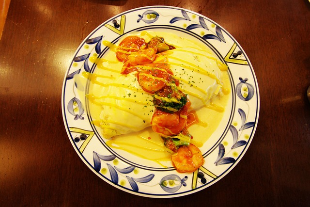

Omlette
Home

Description
An omlette is a dish traditionally made from eggs, butter and spices in a frying pan.
It is a common practice for an omelette to include fillings such as chives, vegetables, mushrooms, meat (often ham or bacon), cheese, onions or some combination of the above.
Today we are going to cook an omlette using the following ingredients and instructions.
Ingredients
- 2 eggs
- Butter
- Salt
- Pepper
Steps
- Heat your frying pan.
- While the pan heats up whisk your eggs till you get a yellow consistency.
- Add the whisked eggs to the pan and spread it around the pan.
- Put your pan on medium heat and season your eggs with salt and pepper.
- Nicely fold up your omlette as it solidifies.
- Garnish your omlette with some greens if you wish.